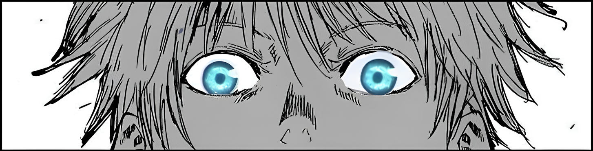
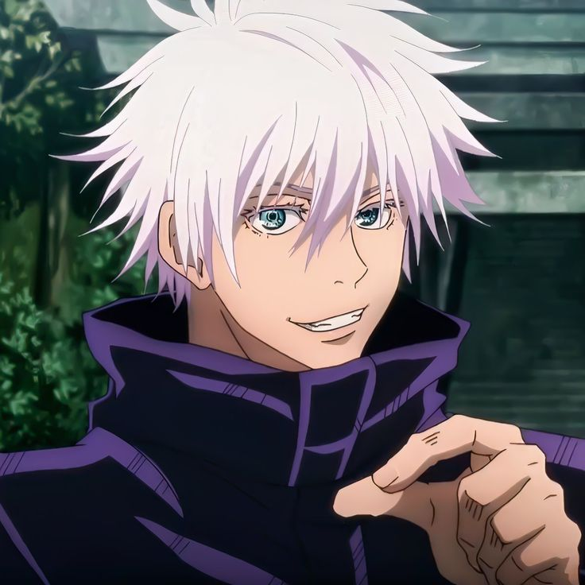
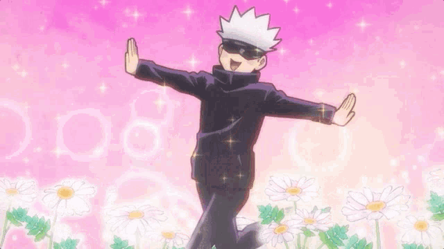

read this!!
i made this webpage as a practice for me and tried my best to make the information as simple as possible so you won't be bored while readind in my wepage. you can call it a fan page but this the first best idea my mind came with. have fun and don't forget to put your rating in "about the creator" page.
Thanks !!

Satoru Gojo. He’s from Jujutsu Kaisen, and he’s literally the strongest sorcerer alive. Like… the dude walks around with blindfolds because seeing too much would make life too easy for him. His eyes are busted powerful — “Six Eyes” — and his technique is called “Limitless,” which basically lets him control space itself. Yeah… space. Not punches, not fireballs… space.

Personality-wise?
He’s that chaotic friend who jokes around all day but can one-shot a whole villain group in 0.2 seconds if they annoy him. Super confident, super cocky, but honestly he can back it up so no one can say anything
He acts goofy with his students (
Yuji,
Megumi,
Nobara), but when things get serious, he switches from “haha silly” to “I will destroy your bloodline” instantly.
So yeah — he’s the strongest, he knows it, and he makes sure everyone else knows it too.
But he’s also a good guy who genuinely wants to change the messed-up jujutsu world.

So basically, Gojo’s skill level is so insane it’s not even fair.
Like—there are “strong sorcerers,” then there are “special grades,” and then there’s Gojo, who’s on his own private difficulty setting. He has stupid amounts of cursed energy AND a technique so dangerous that people just accept he’s unbeatable.
Literally nobody can stand up to him except Sukuna, and that’s only because Sukuna is the “I run the whole villain universe” type of monster.
Try to click the image !

Now about Hollow Purple
Imagine Gojo takes two already broken techniques—one that pulls things in and one that pushes things out—and he just SMASHES them together like a kid mixing chemicals he's not supposed to touch.
The result?
A ball of imaginary mass that deletes anything it touches.
Not blows up… not slices… it just erases your existence like a glitch in a video game.
He basically throws a purple “nah, you don’t exist anymore” attack at people.
So yeah, Hollow Purple is Gojo’s “I’m done playing” button.
___